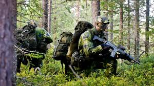
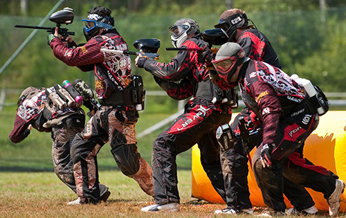
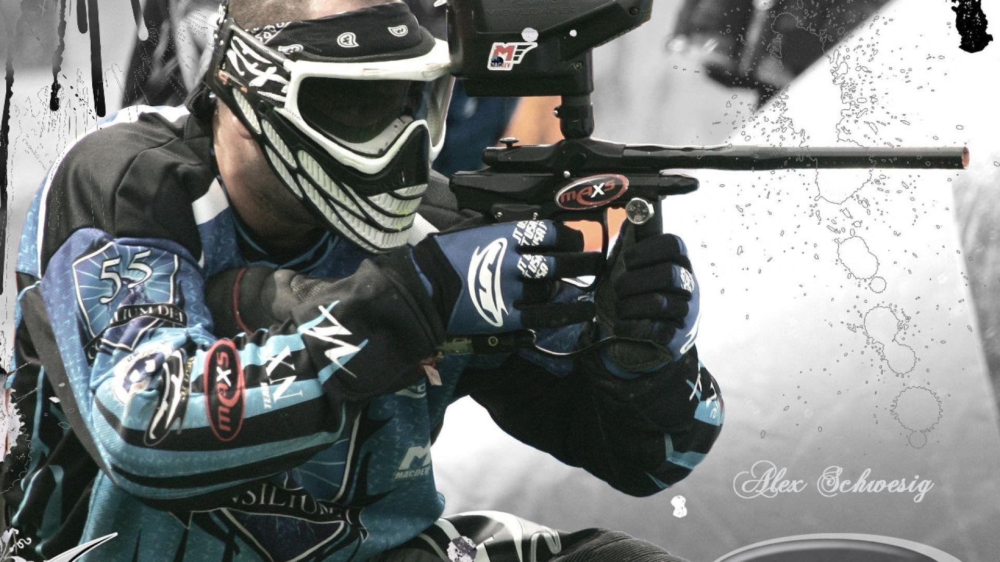

INFORMAZIOA
_
Gauzarik dibertigarriena
Paintballaren praktika jarduera ezin hobea da urtebetetze festak ospatzeko, eta zure koadrila edo familia osoarekin elkartu eta egun ahaztezina pasatzeko.Norbait harritu nahi baduzu eta opari-txeke bat bidal diezazugun nahi baduzu, ez izan zalantzarik eta jarri gurekin harremanetan.
Lekuak
Zure urtebetetzea, batxilergoaren festa ospatu nahi al duzu edo beste plan bat egin nahi duzu lagunekin edo/eta familiarekin?Haur eta helduen modalitatea100.000 m2 baino gehiago, naturaz inguratuta, joko-eszenatoki desberdinak eta aire zabalean paintball egun batez gozatu ahal izateko.
Kirolari buruz
Paintball kirol bat da, non parte-hartzaileek markatzaile izeneko aire-pistolak erabiltzen dituzte beste jokalariei paintball txikiak jaurtitzeko. Funtsean etiketa-jokoa da, jokoan zehar paintballek jotako jokalariak kanporatzen baitira.
Modalitateak
_
Joko modua Paintball Woodsball edo Recball:

Woodsball eremu basoetan praktikatzen den paintball jokoaren modalitateari deitzen zaio (herrialde batzuetan RecBall izenez ezagutzen da). Paintball hasieran basoan jolasten entretenimendu gisa hasi zen, funtsean, bandera eta kanporaketa jokoak harrapatzen zituen. Woodsball zelai tipikoaren tamainak eta topografiak (funtsean baso oparoa) zaila egiten du jokalari bati aldi berean haren zati txiki bat baino gehiago ikustea.
Extreme Paintball joko modua:

Muturreko modua paintball joko mota bat danon benetako borroka baten antzekotasun handiena lortzen saiatzen zaren. Muturreko joko hauen iraupena 24 eta 48 ordukoa da, eremu irekian garatutako biziraupen-jokoa eszenatuz. Kontuan izan behar da Extremea oso modalitate gogorra dela parte-hartzaileentzat, bakoitzak eraman behar baitu jokorako beharrezkoak diren ekipamendu eta hornigai guztiak.
Paintball Scenarioball Joko modua:

Scenarioball edo scripted paintball jokoak istorio edo gai batean oinarritzen dira, horrela jokalarien trebetasun-maila zabala eta parte-hartzaile kopuru handiagoak parte har dezan. Jolas hauek ordu batzuetatik egun batzuetara arte iraun dezakete. Helburuak adostutako gidoiaren arabera aldatzen dira baina elkarlana da jokoetan gai nagusia. Gidoiak mundu gerraren historian gertatutako egoera taktiko errealak erreproduzitu ditzake.